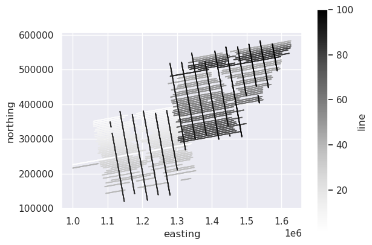
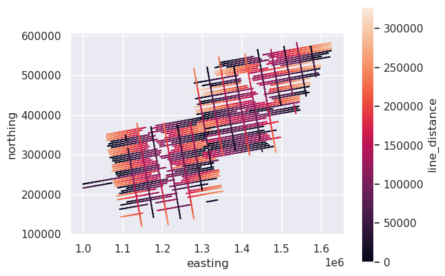
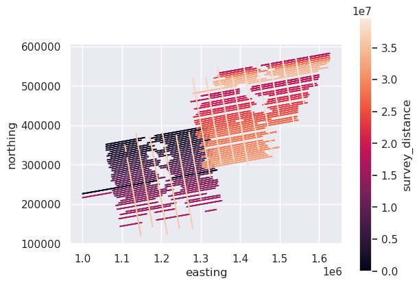

4. Along track distance#
[24]:
# %load_ext autoreload
# %autoreload 2
import geopandas as gpd
import pandas as pd
import airbornegeo
[29]:
data_df = pd.read_csv("data/AGAP_gravity_survey_processed.csv")
data_df = data_df[["easting", "northing", "line", "unixtime"]]
# for speed only retain every 10th point
data_df = data_df[::10]
data_df
[29]:
| easting | northing | line | unixtime | |
|---|---|---|---|---|
| 0 | 1.000024e+06 | 226237.330771 | 1 | 1.229507e+09 |
| 10 | 1.000613e+06 | 226327.808992 | 1 | 1.229507e+09 |
| 20 | 1.001192e+06 | 226414.710863 | 1 | 1.229507e+09 |
| 30 | 1.001780e+06 | 226511.084361 | 1 | 1.229507e+09 |
| 40 | 1.002378e+06 | 226611.524394 | 1 | 1.229507e+09 |
| ... | ... | ... | ... | ... |
| 333950 | 1.587614e+06 | 498482.478462 | 100 | 1.230382e+09 |
| 333960 | 1.587703e+06 | 497964.301966 | 100 | 1.230382e+09 |
| 333970 | 1.587793e+06 | 497444.869696 | 100 | 1.230382e+09 |
| 333980 | 1.587891e+06 | 496927.693234 | 100 | 1.230382e+09 |
| 333990 | 1.587983e+06 | 496401.908627 | 100 | 1.230382e+09 |
33400 rows × 4 columns
[30]:
# plot the survey colored by line number
ax = data_df.plot.scatter(
"easting",
"northing",
c="line",
s=0.1,
)
ax.set_aspect("equal")

4.1. Sort by time (and line)#
The along_track_distance function assumes the data have been sorted by ascending time. If you have lines which overlap in time, then the data should first be sorted by the column which has the line names, and then by time.
[31]:
data_df = data_df.sort_values(["line", "unixtime"])
data_df
[31]:
| easting | northing | line | unixtime | |
|---|---|---|---|---|
| 0 | 1.000024e+06 | 226237.330771 | 1 | 1.229507e+09 |
| 10 | 1.000613e+06 | 226327.808992 | 1 | 1.229507e+09 |
| 20 | 1.001192e+06 | 226414.710863 | 1 | 1.229507e+09 |
| 30 | 1.001780e+06 | 226511.084361 | 1 | 1.229507e+09 |
| 40 | 1.002378e+06 | 226611.524394 | 1 | 1.229507e+09 |
| ... | ... | ... | ... | ... |
| 333950 | 1.587614e+06 | 498482.478462 | 100 | 1.230382e+09 |
| 333960 | 1.587703e+06 | 497964.301966 | 100 | 1.230382e+09 |
| 333970 | 1.587793e+06 | 497444.869696 | 100 | 1.230382e+09 |
| 333980 | 1.587891e+06 | 496927.693234 | 100 | 1.230382e+09 |
| 333990 | 1.587983e+06 | 496401.908627 | 100 | 1.230382e+09 |
33400 rows × 4 columns
4.2. Along track distance per line#
By passing the column name “line” to groupby_column the distances will start at 0 for each line.
[32]:
data_df["line_distance"] = airbornegeo.along_track_distance(
data_df,
easting_column="easting",
northing_column="northing",
groupby_column="line",
)
ax = data_df.plot.scatter(
"easting",
"northing",
c="line_distance",
s=0.1,
)
ax.set_aspect("equal")
data_df.head()
[32]:
| easting | northing | line | unixtime | line_distance | |
|---|---|---|---|---|---|
| 0 | 1.000024e+06 | 226237.330771 | 1 | 1.229507e+09 | 0.000000 |
| 10 | 1.000613e+06 | 226327.808992 | 1 | 1.229507e+09 | 595.832558 |
| 20 | 1.001192e+06 | 226414.710863 | 1 | 1.229507e+09 | 1181.732288 |
| 30 | 1.001780e+06 | 226511.084361 | 1 | 1.229507e+09 | 1777.621139 |
| 40 | 1.002378e+06 | 226611.524394 | 1 | 1.229507e+09 | 2384.001211 |

4.3. Along track distance for the whole survey#
Without passing groupby_column, the dataframe will be treated as a single segment, and distance will be along track, relative to the first row.
[33]:
data_df["survey_distance"] = airbornegeo.along_track_distance(
data_df,
easting_column="easting",
northing_column="northing",
)
ax = data_df.plot.scatter(
"easting",
"northing",
c="survey_distance",
s=0.1,
)
ax.set_aspect("equal")
data_df.head()
[33]:
| easting | northing | line | unixtime | line_distance | survey_distance | |
|---|---|---|---|---|---|---|
| 0 | 1.000024e+06 | 226237.330771 | 1 | 1.229507e+09 | 0.000000 | 0.000000 |
| 10 | 1.000613e+06 | 226327.808992 | 1 | 1.229507e+09 | 595.832558 | 595.832558 |
| 20 | 1.001192e+06 | 226414.710863 | 1 | 1.229507e+09 | 1181.732288 | 1181.732288 |
| 30 | 1.001780e+06 | 226511.084361 | 1 | 1.229507e+09 | 1777.621139 | 1777.621139 |
| 40 | 1.002378e+06 | 226611.524394 | 1 | 1.229507e+09 | 2384.001211 | 2384.001211 |

4.4. Distances without time data#
The above functions assume the data is sorted by time. If you don’t have time data, but your data is still sorted by time, the functions will work. If you are unsure if your data is sorted by time, then you can use set guess_start_position to True. This will use which ever end of the segment is furthest west as the starting point and calculate distances relative to that point.
[34]:
# turn to geopandas geodataframe
data_df = gpd.GeoDataFrame(
data_df,
geometry=gpd.points_from_xy(x=data_df.easting, y=data_df.northing),
crs="EPSG:3031",
)
[35]:
# un-sort the data to demonstrate
unsorted_data_df = data_df.sample(frac=1).reset_index(drop=True)
unsorted_data_df.head()
[35]:
| easting | northing | line | unixtime | line_distance | survey_distance | geometry | |
|---|---|---|---|---|---|---|---|
| 0 | 1.283201e+06 | 266095.662175 | 27 | 1.230136e+09 | 14548.819812 | 1.122048e+07 | POINT (1283200.862 266095.662) |
| 1 | 1.262658e+06 | 232585.877385 | 34 | 1.230562e+09 | 173335.645488 | 1.410971e+07 | POINT (1262658.445 232585.877) |
| 2 | 1.202304e+06 | 326848.674744 | 13 | 1.230729e+09 | 113447.438192 | 5.215599e+06 | POINT (1202303.634 326848.675) |
| 3 | 1.222970e+06 | 325541.464425 | 14 | 1.229851e+09 | 89354.687059 | 5.691345e+06 | POINT (1222969.923 325541.464) |
| 4 | 1.176050e+06 | 343350.190150 | 87 | 1.229942e+09 | 27853.999158 | 3.613453e+07 | POINT (1176050.08 343350.19) |
[36]:
unsorted_data_df["line_distance"] = airbornegeo.along_track_distance(
unsorted_data_df,
groupby_column="line",
guess_start_position=True,
)
ax = unsorted_data_df.plot.scatter(
"easting",
"northing",
c="line_distance",
s=0.1,
)
ax.set_aspect("equal")
unsorted_data_df.head()
Segments: 100%|██████████| 100/100 [00:00<00:00, 107.72it/s]
[36]:
| easting | northing | line | unixtime | line_distance | survey_distance | geometry | |
|---|---|---|---|---|---|---|---|
| 0 | 1.283201e+06 | 266095.662175 | 27 | 1.230136e+09 | 207964.050029 | 1.122048e+07 | POINT (1283200.862 266095.662) |
| 1 | 1.262658e+06 | 232585.877385 | 34 | 1.230562e+09 | 173335.645488 | 1.410971e+07 | POINT (1262658.445 232585.877) |
| 2 | 1.202304e+06 | 326848.674744 | 13 | 1.230729e+09 | 138456.846060 | 5.215599e+06 | POINT (1202303.634 326848.675) |
| 3 | 1.222970e+06 | 325541.464425 | 14 | 1.229851e+09 | 154417.079255 | 5.691345e+06 | POINT (1222969.923 325541.464) |
| 4 | 1.176050e+06 | 343350.190150 | 87 | 1.229942e+09 | 223503.131372 | 3.613453e+07 | POINT (1176050.08 343350.19) |

[ ]: